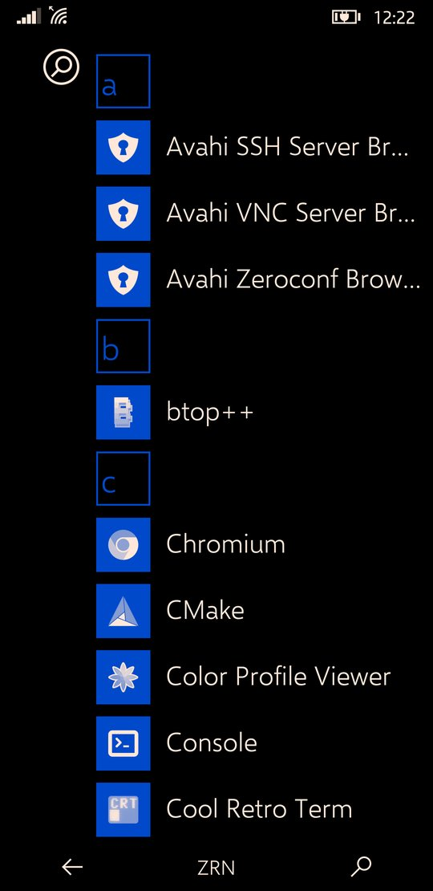
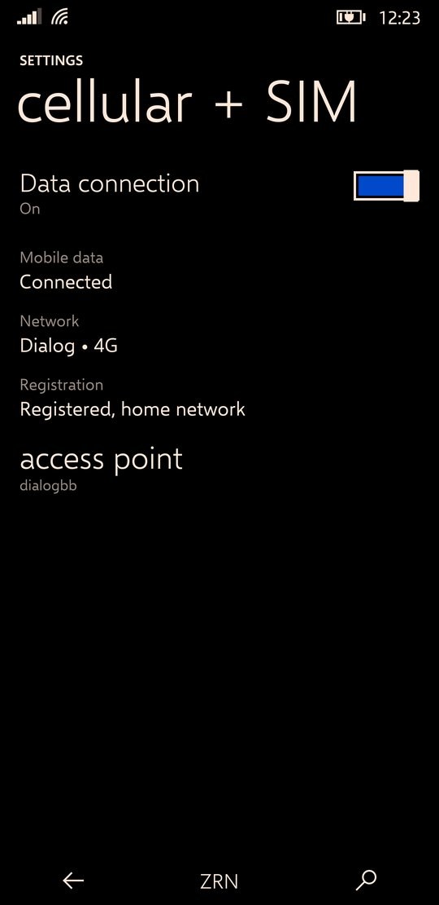
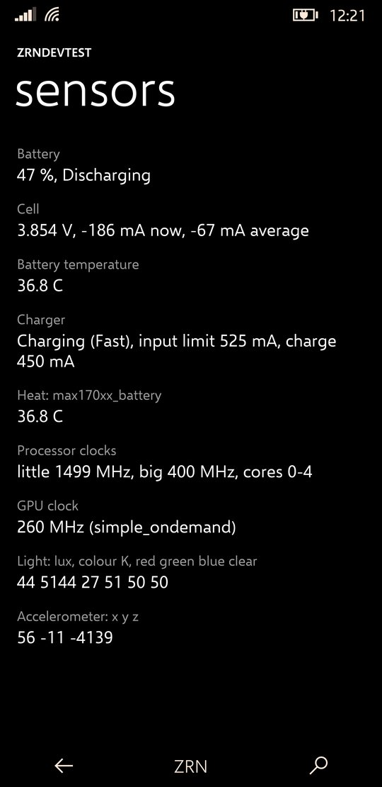

Zerone Laboratories / operating systems
ztOS
A phone operating system with Windows Phone 8.1's look and motion, on Arch Linux ARM and mainline Linux.
ztOS is the ztMETRO shell, its own apps, an updater and an SDK for apps in Python and Qt, on an ordinary Arch Linux ARM system. It runs on the Samsung Galaxy S9 (SM-G960N, starlte) and in the QEMU emulator. Everything that moves is drawn by the GPU.
It is alpha software. The S9 port runs a mainline 7.1 kernel with the phone's GPU, display, touch, Wi-Fi, 4G data, sound and sensors working. ztConflo, its image builder, is how it reaches other phones.
Screenshots
Taken from the live display of a Galaxy S9.





ztMETRO
The shell, and the only one installed.
ztMETRO is a Wayland compositor, built on wlroots, that is also the whole phone interface: Start with its live tiles, the app list and search, the action centre, the app switcher, the lock screen and the on-screen keyboard. Its look and motion are Windows Phone 8.1's, measured frame by frame against screen recordings of real Lumias.
It renders itself with OpenGL ES: every tile, bar and app surface is a textured quad with its own matrix, which is what lets tiles tilt under a finger and whole screens swing. Text is drawn once and kept as a texture, and frames are drawn only while something moves.
- Start and tiles
- Pin, move and resize tiles; the turnstile when an app opens and when you come back.
- Action centre
- Notifications, quick actions, brightness, and a media banner.
- Keyboard
- On-screen, lifting the app so the text box stays in sight.
- Animation speed
- One setting for the whole interface, shell and apps, 75% by default.
- Haptics
- Strength per kind of touch, set in Settings.
- Other apps
- Firefox, Chromium and any Linux app run as windows inside it.
Apps
What comes installed.
| App | What it does | Written with |
|---|---|---|
| Settings | Wi-Fi, cellular and SIM, haptics, quick actions, theme, developer options | ZrnMetroCore (C) |
| Phone, Messaging, People | Calls, SMS and contacts, in the same style | ZrnMetroCore (C) |
| ZrnDevTest | What the hardware reports: system, sensors live, the journal and kernel log | ZrnMetroCore (C) |
| Welcome | The first-start tour: Start, getting around, your apps, making apps | ztOS SDK (Python) |
| Updates | Shows available updates and installs them | ztOS SDK (Python) |
| Firefox, Chromium, terminal | Ordinary Linux apps, shown as windows | Arch packages |
The native apps share ZrnMetroCore, a small toolkit with the shell's own widgets, page turns, pivots and press tilt.
The SDK
Apps in Python and Qt that look and move like the built-in ones.
The ztOS SDK builds an app into a single file: a small C launcher with the app's Python code, pages, pictures and the ztos runtime zipped behind it. Pages, lists, pivots, entries, toggles, round buttons, app bars and dialogs all come from the runtime, with the toolkit's own numbers for every motion.
ztos-sdk new "Notes" # a new app, from the template ztos-sdk run # try it on the computer ztos-sdk deploy # build, install on the phone, open it ztos-sdk logs -f # what it prints, on the phone
Keeping it fast
- Motion on the GPU. While a page turns, a list scrolls or a button leans, a GPU layer over the app shows pictures of the pages as textured quads, drawn by a small C renderer. Widgets are rasterised once, not every frame.
- A warm runtime.
ztos-zygoteloads Qt for Python once and forks each app from itself, which saves about a second of CPU per launch. - Compiled code. Apps ship with their Python already compiled, so the phone never compiles it on start.
System services
ztOS's parts below the shell.
| Name | What it does |
|---|---|
| ztOSCoreSensorFramework | Starts and watches every piece of hardware support and reports what fails; runs the sensor hub and the sensors |
| ztOSCoreNetworking | The modem, calls, messages and mobile data, and joining Wi-Fi |
| ztOSCirrusAudio | Sound: the audio DSP and the Cirrus speaker amplifiers |
| zrnperfd | Power: dynamic boost from the efficiency cores up, and core power-down |
| ztos-update | The updater: a daily check, a notification, and the Updates app |
The Galaxy S9 port
Mainline Linux on an Exynos 9810.
ztOS's first phone is the Galaxy S9, SM-G960N (starlte). It runs mainline Linux 7.1 with the Exynos 9810 drivers, booting from the phone's internal storage, with Arch on BOOT and TWRP left in RECOVERY. The phone's hardware support is built as loadable kernel modules, so drivers can be developed without reflashing. The modem and sensor hub still use Samsung's own Android daemons, run from the phone's stock partitions.
Installing
You need a Linux computer with about 15 GB free, an internet connection, a USB cable, and the phone charged above 50%. The bootloader must already be unlocked with TWRP installed in RECOVERY.
- Boot the phone into TWRPTurn the phone off, then hold Volume Up, Bixby and Power until TWRP appears. Connect it to the computer with the USB cable.
- Get ztOS on the computer
git clone https://github.com/Zerone-Laboratories/ztOS.gitcd ztOS - Run the installer
installer/ztos install --target starlte
Choose 1, then pick a user name and password. The build takes 30 to 60 minutes. - Confirm the installAnswer yes to write the boot image, then type
ERASEwhen asked. Leave the cable in until it says done. - Restart the phoneHold Power, Volume Up and Volume Down. The first start takes about a minute, then the Welcome app shows how ztOS is used.
If something fails, the phone goes back to TWRP by itself. Start again from step 3. To try ztOS without a phone, run installer/ztos install --target qemu instead. It opens ztOS in a phone-shaped window on the computer.
Hardware status
| Part | Status | Notes |
|---|---|---|
| Display, 1440×2960 | Works | Manual and automatic brightness |
| GPU | Works | Mali-G72 MC18 through Panfrost, OpenGL ES 3.1 |
| Touchscreen | Works | S6SY761, multi-touch |
| CPU, all 8 cores | Works | Frequency scaling; big cores powered down when idle |
| Battery and charger | Works | MAX17042 gauge, MAX77705 charger |
| Wi-Fi | Works | BCM4361, joined from Settings |
| Mobile data, SIM, signal | Works | 4G through ztOSCoreNetworking |
| Speaker | Works | Through ztOSCirrusAudio |
| Light sensor, vibration, notification light | Works | |
| SMS | Partial | Sending works; receiving is untested |
| Calls | Partial | They connect, but the call's sound is not routed yet |
| Motion sensors | Partial | Readable; nothing in the shell uses them yet |
| Suspend | Broken | The big cores don't come back; the screen-off state runs at the lowest clocks instead |
| Bluetooth, camera, GPS, microphone | Not started |
Known quirks
- The modem or sensor hub doesn't come up. It tends to follow a forced reboot or a crash. One pass through TWRP brings them back: reboot into recovery, then back into ztOS.
- A driver that crashed while loading is skipped at the next boot, so a crash can't become a boot loop. Remove its mark file under
/var/libto try again. - Reboot rather than unload a driver module to try a new build; a failed unload has left the phone unable to shut down.
- The clock resets at every boot until the network sets it.
- Keep the stock Android partitions. The installer writes only BOOT and USERDATA, and the modem needs the rest.
Getting back in
Nothing can leave the phone unbootable, and every layer has a way back. If Arch doesn't come up, the initramfs opens a rescue shell on the same USB network. If the kernel hangs, a watchdog resets the phone into TWRP after 30 seconds. If nothing appears on USB at all, the boot stage resets the phone after ten minutes. And download mode, which can't be overwritten, has everything needed to put the stock firmware back.
ztConflo: other phones
How ztOS leaves the S9.
ztConflo takes a phone's codename and builds a flashable ztOS image for it: Arch Linux ARM with ztMETRO, on a kernel and boot setup that postmarketOS already boots. It looks in the ztOS device registry first and falls back to postmarketOS for phones nobody has ported ztOS to yet. It never ports new hardware.
- Eligible phones
- 135 today, with a mainline aarch64 kernel; 71 of them archived by postmarketOS, and flagged.
- GPU check
- Phones without a Mesa GPU driver still build, with a warning that ztMETRO won't start.
- Registry
- One TOML file per phone; a phone moves from untested to boots to tested through a hardware checklist.
- Interface
- A command line and a terminal UI in ztOS's own look, which installs its tools on first run.
Status and next
Where ztOS is today.
- The first phone besides the S9 booting a ztConflo build.
- The sound of calls, and receiving SMS.
- Suspend on the S9, for idle battery life closer to Android's.
- Native apps drawing with OpenGL ES the way the shell does, and a ztOS package repository for updates.
See also
- ztOS source, with the full status page and the SDK guide
- ztConflo, the image builder, and ztos-devices, its registry
- galaxy-s9plus-mainline-linux, the Exynos 9810 mainline drivers ztOS builds on
- postmarketOS, whose kernels ztConflo reuses
- Ometh Abeyrathne, who makes ztOS